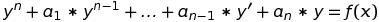
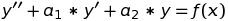
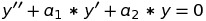
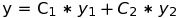
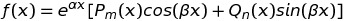
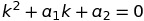
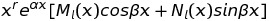
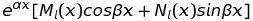

Линейным неоднородным дифференциальным уравнением (ЛНДУ) n-го порядка с постоянными коэффициентами называется уравнение вида
 (1)
где ai, i=1..n – действительные числа; y = f(x) – данная функция.
Рассмотрим ЛНДУ второго порядка
 (2)
и соответствующее ему однородное уравнение (ЛОДУ)
 (3)
Пусть y1 и y2 – фундаментальная система решений уравнения (3), тогда
 (4)
есть общее решение уравнения (3)
Общее решение неоднородного уравнения (2) равно сумме общего решения соответствующего однородного (3) и частного решения неоднородного уравнения (2):
y_{он} = y_{оо} + y_{чн}
Доказательство. Так как y_{оо} - общее решение уравнения (3), то по определению решения эта функция обращает уравнение (3) в верное равенство. Так какучн- частное решение уравнения (2), то функция у_{чн} также обращает это уравнение в тождество. Имеем два тождества:
у''_{оо} + a1*y'_{оо} + a2*y_{оо} ≡ 0
(y_{чн})'' + a1(y_{чн})'+ a2*y_{чн} ≡ f(x)
найдем их сумму:
(y''_{оо} + y''_{чн})+ a1(y'_{оо} + y'_{чн})+ a2(y_{оо} + y_{чн}) ≡ f(x) или
(y_{оо} + y_{чн})''+ a1(y_{оо} + y_{чн})' + a2(yоо+yчн) ≡ f(x)
Следовательно, y_{он} = y_{оо} + y_{чн} является общим решением уравнения (2).
В том случае, когда правая часть дифференциальных уравнений (1) и (2) в общем случае имеет вид

где Pm(x) и Qn(x) - многочлены переменной x степеней m и n; α, β - действительные числа, используется метод неопределенных коэффициентов (или метод подбора).
Частное решение y_{чн} дифференциального уравнения (2) зависит в каждом конкретном случае от вида функции f(x) и от выражения α±iβ(где i = sqrt(−1) ), которое сравнивается с корнями характеристического уравнения, составленного для соответствующего ЛОДУ (3). Возможны случаи:
1. Если α±iβ является корнем кратности r характеристического уравнения  (5) (r – означает сколько раз α±iβ совпадет с корнями характеристического уравнения). Тогда частное решение находится в виде y_{чн} = 
где Ml(x) и Nl(x) - многочлены со своими неопределенными коэффициентами, при этом l = max{m, n}.
2. Если α±iβ не является корнем характеристического уравнения (5), то r = 0 и x0=1, тогда частное решение y_{чн} имеет вид
y_{чн} = 